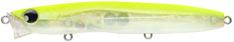
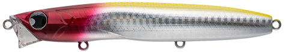
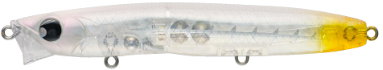
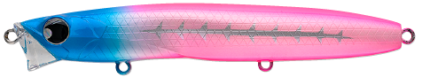

レクター131F BOLD
（RECTER131F BOLD）
レクター131F BOLD（RECTER131F BOLD）はPOP SEA CREW（ポップシークルー）のリップレスフローティングミノーです。
超スローピッチゆらぎアクションで、浮遊系のベイトを狙うシーバスにオールシーズン対応。主なターゲットはシーバスです。
圧倒的に潜らないように設計されたボディバランスで、水面で弱って流されるベイトを演出するRECTERシリーズの大型モデルです。

画像出典:POP SEA CREW公式HP
スペック
- メーカー
- POP SEA CREW（ポップシークルー）
- タイプ
- フローティング（リップレス）
- 全長
- 131mm
- 重量
- 25g
- フック
- #4
- リング
- #3
- アクション
- スローピッチゆらぎ
- レンジ
- 0〜20cm
- 価格
- 2,750円（税込）
▼今すぐチェック

レクター131F BOLDの特徴
潜らないボディバランスで、水面で弱って流されるベイトを演出
-
圧倒的に潜らないボディバランス
水面で弱って流されるベイトを演出。水面に浮き切らずに流される表層のベイトを食べているシーバスに効く。
-
V字型ヘッド
水の抵抗や流れの変化をつかみやすい、ショートリップを搭載したようなV字型のヘッド。巻くスピード次第で引き波も出せる。
-
アップクロスから流す釣りにも
水なじみがよく、わずかに水流を当てるだけで漂わせるように流せるので、アップクロスから流すような釣りにも効果的。
レクター131F BOLDの使い方
基本はスローのただ巻きです。水面直下〜20cmをゆっくり引いて、ゆらぎアクションで誘います。
流れのある場所では、アップクロスに投げて、ラインを張りすぎないように流れに乗せて漂わせましょう。わずかな水流でもゆらぎながら流れていきます。
レクター131F BOLDの得意な状況
イナッコ、イワシ、コノシロ、サッパ、サヨリなど、水面付近にいるベイトを狙っているシーバスならオールシーズン使えます。
極浅レンジなので、シャローの攻略や、河川で流れに乗せて流す釣りも得意です。
ワンポイント
25gと重さがあるので、111Fより飛距離を出しやすく、風のある日でも扱いやすいモデルです。
RECTERシリーズのサイズの使い分け
| モデル | 全長・重さ | レンジ・特徴 |
|---|---|---|
| RECTER71F | 71mm・6.4g | 0〜10cm。小さめのベイトや軽めのタックルに |
| RECTER111F | 111mm・10.5g | 0〜10cm。バチ抜けからオールシーズン使える基本サイズ |
| RECTER131F BOLD（この記事） | 131mm・25g | 0〜20cm。大きめのベイトやアップクロスからのドリフトに |
※数値は公式ページより。
オススメカラー
レクター131F BOLDは全10色。そのうち4色を紹介します（画像は公式のカラーチャートより）。

#001 ハッピーレモンまず1つ選ぶならこの色。視認性の高いレモン系。

#004 レッドヘッドホロ定番のレッドヘッド。ホロでフラッシングも。

#007 ブレイクスルークリアボディにチャートのテール。ナチュラルに見せつつ視認性も。

#008 ブルピンシャドーボーンブルーとピンクのツートン。視認性の高いアピール系。
画像出典:POP SEA CREW公式HP
レクター131F BOLDに似ているルアー
-
 レクター111F
ポップシークルー
詳細はこちら＞
レクター111F
ポップシークルー
詳細はこちら＞
同じシリーズの基本サイズ。
-
 ユニフォース130F
レガーレ
詳細はこちら＞
ユニフォース130F
レガーレ
詳細はこちら＞
大型ベイトのシーズンに、表層と水面下をヘッドで使い分けられる。
-
 バンク120S
ポップシークルー
詳細はこちら＞
バンク120S
ポップシークルー
詳細はこちら＞
同じポップシークルーの大型シンキングペンシル。